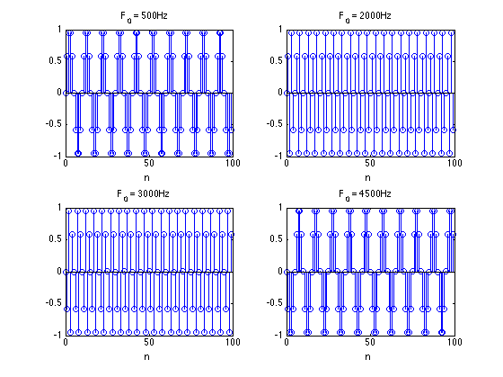
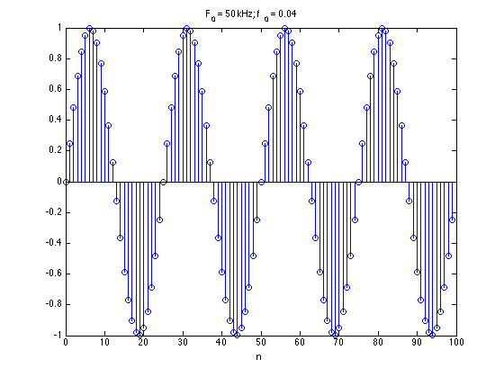
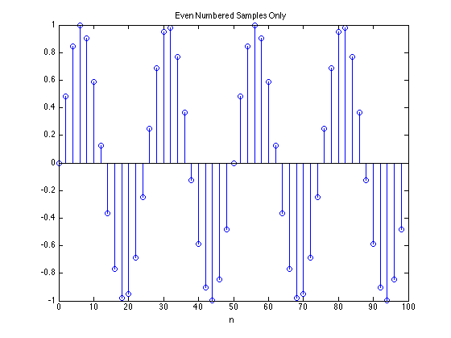

Homework 1
% Problem 1.15(a) Fs = 5e3; F0 = [0.5 2 3 4.5].*1e3; n = 0:1:99; t = n./Fs; figure(1); for i = 1:length(F0) x = sin(2*pi*F0(i)*t); subplot(2,2, i); stem(n, x); xlabel('n'); title([' F_0 = ', num2str(F0(i)), 'Hz']); end % Problem 1.15(b)(1) F0 = 2e3; Fs = 50e3; t = n./Fs; x = sin(2*pi*F0*t); figure(2) stem(n, x); xlabel('n'); title(['F_0 = 50 kHz; f_0 = ', num2str(F0/Fs)]); % Problem 1.15(b)(2) figure(3) stem(downsample(n,2), downsample(x,2)); xlabel('n'); title('Even Numbered Samples Only')  